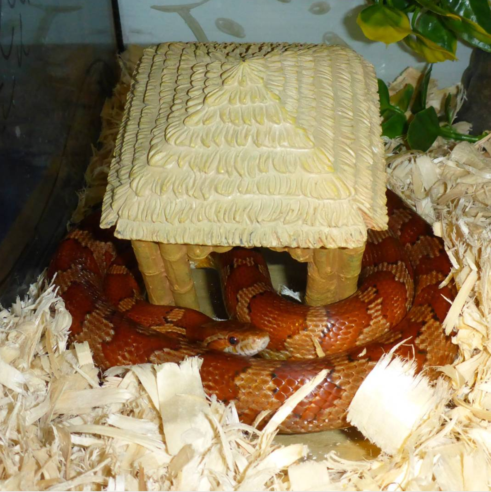
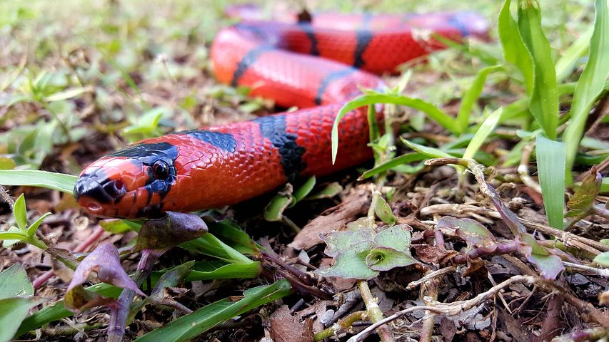
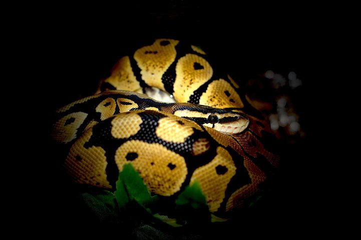

CORN SNAKES
The corn snake (Pantherophis guttatus)
is a North American species of rat snake
that subdues its small prey by constriction.

MILK SNAKES
Lampropeltis triangulum, commonly known as a milk snake or milksnake, (French: Couleuvre tachetée; Spanish: Culebra-real coralillo) is a species of king snake. There are 24 subspecies of milk snakes. Lampropeltis elapsoides, the scarlet kingsnake, was formerly classified as the subspecies L. t. elapsoides, but is now recognized as a distinct species. The subspecies have strikingly different appearances, and many of them have their own common names. Some authorities suggest that this species may be split into several separate species. They are not venomous or otherwise dangerous to humans.

BALL PYTHON
The ball python (Python regius), also known as the royal python, is a python species found in sub-Saharan Africa.
